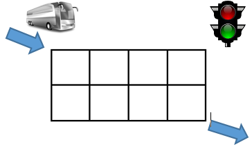

Thành phố Y có hệ thống giao thông gồm n đường ngang và m đường dọc chạy 2 chiều. Các đường ngang được đánh số từ 1 đến n từ trên xuống dưới và đường dọc được đánh số từ 1 đến m từ trái sang phải. Các đường ngang và đường dọc cắt nhau tạo thành n x m giao lộ (ngã hai, ngã ba, ngã tư) như hình bên dưới. Tại các giao lộ (kể cả ngã hai) đều có bố trí đèn giao thông gồm hai màu xanh đỏ. Đèn xanh là được đi và đèn đỏ là đứng lại. Điểm đặc biệt của đèn ở đây là khi đèn đỏ thì xe ở cả bốn hướng đều phải dừng lại chờ, khi đèn xanh thì xe ở bốn hướng đều được đi (thẳng, rẽ trái, rẽ phải đều được). Cứ sau mỗi 1 phút thì đèn sẽ chuyển từ xanh sang đỏ và ngược lại.

Một chiếc xe khách muốn vào thành phố ở giao lộ (1,1) và ra khỏi thành phố ở giao lộ (n, m). Thời gian để xe khách di chuyển từ một giao lộ đến giao lộ kế cận là 1 phút. Khi xe vừa trờ tới một giao lộ thì lúc đó đèn cũng chuyển màu, nếu là màu xanh thì xe tiếp tục đi, nếu là màu đỏ thì xe phải dừng lại chờ 1 phút để chuyển xanh thì mới được đi tiếp. Bạn hãy tính xem thời gian nhanh nhất để xe đi ra khỏi thành phố là bao nhiêu nhé.
Dữ liệu nhập:
- Dòng đầu tiên là hai số nguyên n và m (2 ≤ n, m ≤ 1000)
- Trong n dòng tiếp theo, tại dòng thứ i gồm m số nguyên aij là tình trạng đèn tại thời điểm xe bắt đầu vào thành phố: aij = 1 nghĩa là tại giao lộ (i, j) có đèn màu xanh, aij = 0 là có đèn màu đỏ.
Dữ liệu xuất:
- Là một số nguyên xác định số phút sớm nhất mà xe ra khỏi thành phố.
Test 1: Đi theo hướng (1, 1) -> (1, 5) -> (3, 5)
Khi xe đến mỗi giao lộ thì đèn đều màu đỏ nên phải chờ ở tất cả 7 đèn tốn 7 phút. Cộng thêm thời gian di chuyển là 6 phút. Tổng cộng 13 phút.
Test 2: Đi theo hướng (1, 1) -> (3, 1) -> (3, 5)
Khi xe đến mỗi giao lộ thì đèn đều màu xanh nên không phải chờ đèn nào. Chỉ tính thời gian di chuyển là 6 phút.